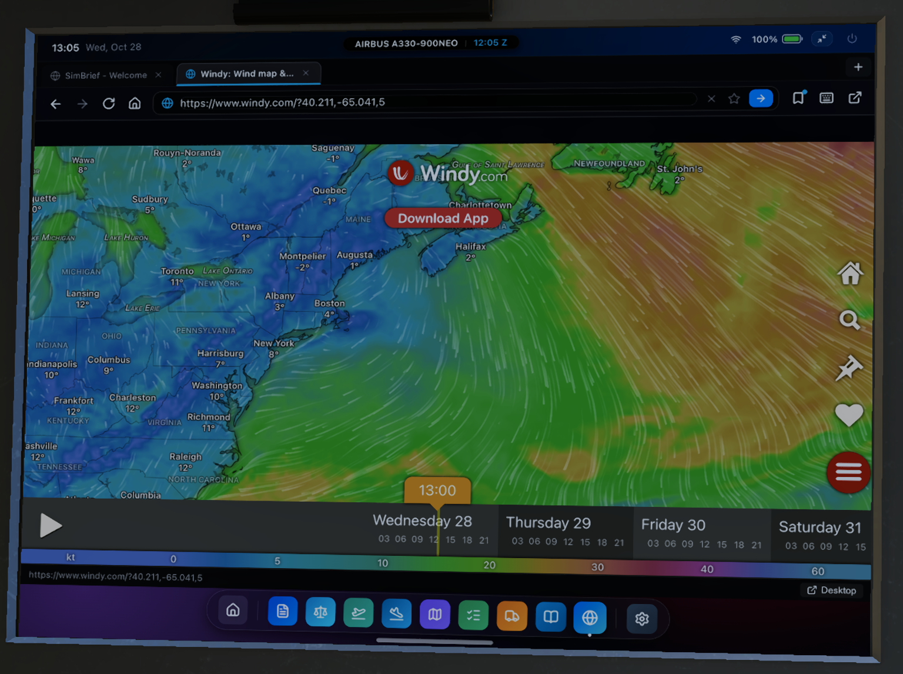

Web Browser¶
The Web Browser application integrates a full-featured web browser directly onto the cockpit tablet screen.
Flight crews can consult real-time aviation resources, live information, and online operational documentation without leaving the simulator cockpit.

Key Features¶
- Multi-Tab Browsing: Open, switch between, and manage multiple tabs concurrently with automatic session persistence across flights.
- Unified Omnibar & Search: Direct web address entry with integrated search (Google or DuckDuckGo).
- Bookmarks System: Save and organize your favorite aviation websites with a toggleable quick-access bookmarks bar.
- On-Screen Virtual Keyboard: Built-in touchscreen keyboard with full alphanumeric and numeric keypad modes for in-cockpit typing.
- Desktop Browser Handoff: Tap the Desktop button to open complex web tasks or checkout links in your computer's native browser.
Controls & Navigation¶
1. Address Bar¶
- Direct URL Entry: Tap the address bar, type any web address (e.g.,
windy.comorhttps://maps.google.com), and press Enter or the arrow button. - Search Queries: Type any search query (e.g.,
LFPG METARorEHAM chart notes) to search using your configured search engine. - Search Engine Selection: Set your preferred search engine (Google or DuckDuckGo) in the Settings application.
2. Tab Management¶
- New Tab: Tap the
+button in the tab bar to open a new tab. - Switch Tabs: Tap any tab in the header to switch to it instantly.
- Close Tab: Tap the
×button on any tab to close it. - Session Persistence: Open tabs, navigation history, and last active addresses are saved automatically and restored when launching X-Plane.
3. Bookmarks Bar¶
- Bookmark Current Page: Tap the Star icon in the address bar to add the active page to your bookmarks.
- Toggle Bookmarks Bar: Tap the Bookmark icon in the top toolbar to show or hide the quick-access bookmark strip.
- Custom Bookmarks: Add custom shortcuts with custom titles and URLs using the
+ Add Bookmarkbutton. - Edit & Remove: Tap the pencil icon on any bookmark to edit its title/URL, or tap the trash icon to remove it.
4. On-Screen Virtual Keyboard¶
When interacting with the tablet in the 3D cockpit without reaching for your physical keyboard:
- Tap the Keyboard icon in the browser toolbar, or click into any web text input field.
- The virtual keyboard will slide up from the bottom of the screen.
- Switch between standard QWERTY and numeric/symbol keypads as needed.
- Tap the close button or anywhere outside the keyboard to dismiss it.
External Views & Remote Devices¶
The built-in web browser is rendered exclusively on the 3D cockpit tablet display inside X-Plane.